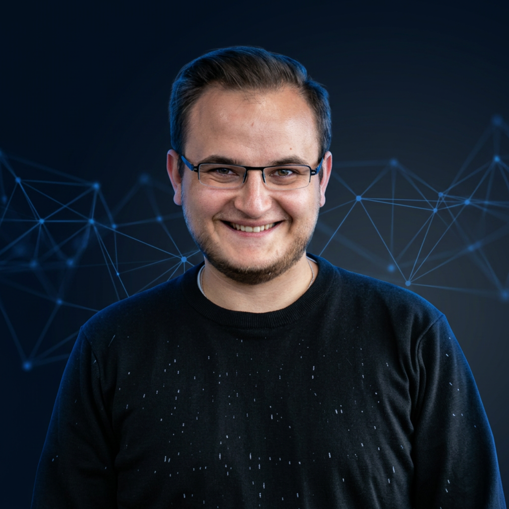
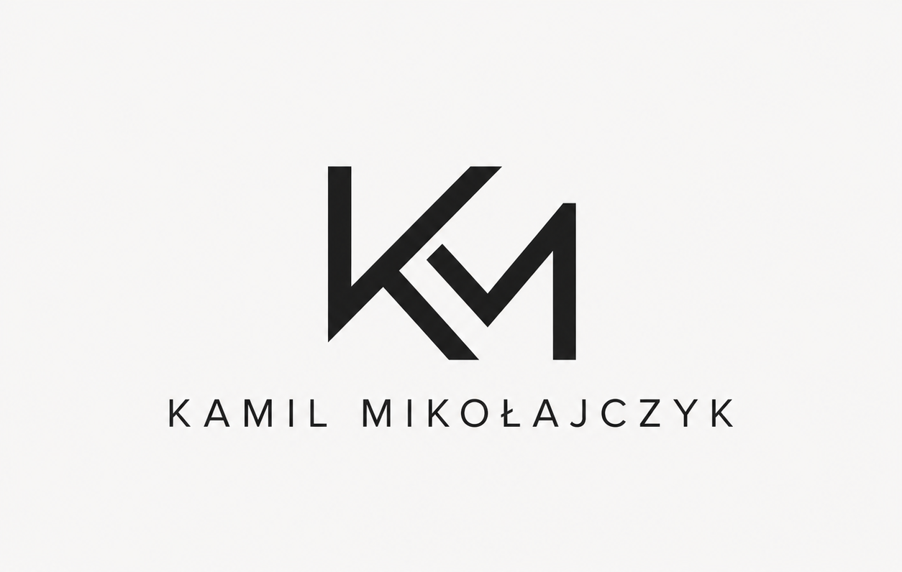

01
Zarządzanie projektami IT
Prowadzenie projektów technologicznych i cyfrowych transformacji od planu do wdrożenia.
Konsulting IT · Product delivery · Transformacja cyfrowa
Pomagam firmom skutecznie realizować projekty IT — od pomysłu i analizy biznesowej, przez planowanie i koordynację zespołów, aż po wdrożenie gotowego rozwiązania.
Pomagam firmom dostarczać projekty IT na czas, w budżecie i z realnym wpływem na wyniki biznesowe.

Wersja 2 portfolio pokazuje mnie nie tylko jako wykonawcę stron, ale jako partnera w prowadzeniu projektów IT i rozwoju produktów cyfrowych.

Posiadam ponad 9 lat doświadczenia w zarządzaniu projektami technologicznymi, e-commerce, systemami ERP oraz platformami internetowymi. Pracowałem zarówno z dużymi organizacjami, jak i firmami rozwijającymi własne produkty cyfrowe.
Zarządzałem projektami o łącznej wartości przekraczającej 15 mln zł, prowadząc zespoły deweloperskie, UX/UI, QA oraz partnerów zewnętrznych.
Specjalizuję się w łączeniu potrzeb biznesowych z możliwościami technologicznymi, dzięki czemu projekty są realizowane szybciej, efektywniej i z większą wartością dla organizacji.
Od analizy i roadmapy, przez koordynację zespołów, po wdrożenie i usprawnienie procesów projektowych.
Prowadzenie projektów technologicznych i cyfrowych transformacji od planu do wdrożenia.
Definiowanie wymagań, mapowanie procesów i przekładanie potrzeb biznesu na zakres prac.
Rozwój produktów cyfrowych, priorytetyzacja backlogu i budowa roadmap produktowych.
Koordynacja release'ów, harmonogramów, ryzyk, zależności i komunikacji między zespołami.
Usprawnianie pracy zespołów, procesów biznesowych i przepływu informacji w organizacji.
Zarządzanie zespołami Agile i dopasowanie sposobu pracy do realnych potrzeb projektu.
Koordynacja integracji systemów, ERP, platform e-commerce i usług zewnętrznych.
Diagnoza procesów, ryzyk, odpowiedzialności i wsparcie organizacji pracy zespołów.
Wersja 2 zachowuje szybki dostęp do projektów przygotowanych w portfolio.
Porozmawiajmy o tym, jak dowieźć go szybciej, czyściej i z większą wartością dla biznesu.